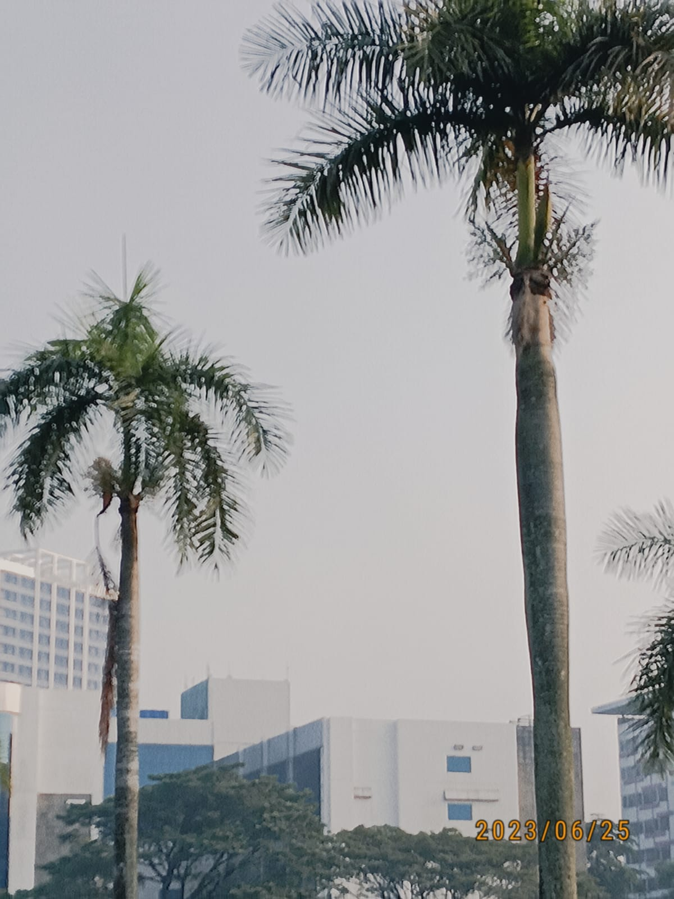

Gambar disamping adalah gambar dari sebuah desa kecil yang tenang di atas perbukitan.
Saat Pagi hari di desa itu menghadirkan nuansa yang berbeda. Embun masih menempel di dedaunan, sementara asap tipis dari dapur rumah warga perlahan naik ke udara.
menganalisis novel SANG ALKEMIS karya PAULO COELHO

Novel Sang Alkemis karya Paulo Coelho dianalisis berdasarkan fakta kemanusiaan, subjek kolektif dan juga pandangan dunia. Metode penelitian yang digunakan adalah metode deskriptif kualitatif.
Penelitian ini menggunakan alur analisis yaitu kondensasi data, penyajian data, dan penyimpulan. Proses analisis dilakukan dengan menghimpun data temuan berupa kata, frasa, klausa, kalimat dan paragraf yang terdapat pada objek penelitian.
Pada penelitian ini ditemukan fakta kemanusiaan, subjek kolektif, dan pandangan dunia yang terdapat pada novel Sang Alkemis karya Paulo Coelho. Fakta kemanusiaan yang ditemukan berupa serangkaian perilaku yang sifatnya individual dan juga sosial. Kemudian subjek kolektif tergambarkan pada perilaku individu sebagai sebuah kolektivitas yang saling berkaitan. Sedangkan pandangan dunia menjelaskan mengenai kemiripan stigma dan cara berpikir masyarakat pada novel Sang Alkemis dengan realitas sosial yang terjadi di dunia nyata.